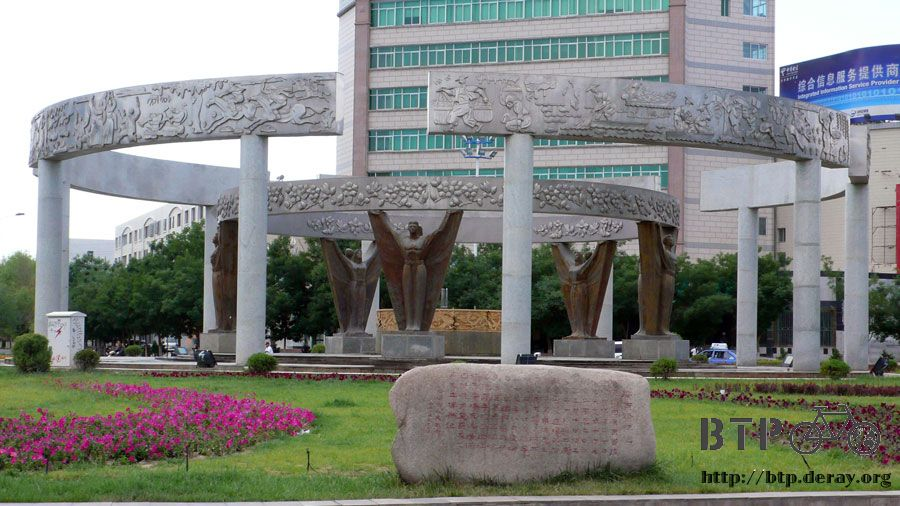
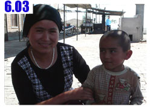

哈密‧瓜
昨天抵達哈密的時候已經將近晚上十點，洗過澡吃過飯就快要半夜了。
一天騎乘兩百多公里的疲勞讓我沒辦法躺在床上整理遊記，只好乖乖睡去～是一個不用管鬧鐘幾點叫，可以睡到自然醒的夜晚。
睡醒後跟老闆借洗衣機洗衣服，昨天眼尖被我發現旅館有洗衣機，而且可以免費使用。
有洗衣機代勞就輕鬆多了，加上有脫水的功能，衣服曬的時候乾的也比較快。
這是我入住的旅館，老闆兼做手機通訊行的生意，二樓才是旅館，隔壁則是洗車場，洗好的衣服正晾在他的門口。
衣服洗好了，就沒有欠著什麼事情還沒有做完的感覺，自在許多，遊記也整理好之後，就上街去閒晃吧。
若要說我有什麼趕稿的壓力的話，那應該就是每個星期六。
所以一個星期只要有一天在周末之前，特別是星期六，讓我上網的話，那真是太令人開心了。
之前連續三天都在荒漠當中求生存，飲水和食物才是關心的重點，現在重新回到都市，又恢復成找網吧的習慣了。
拎著一袋大肉小籠包，邊走邊吃，邊注意有沒有網吧的招牌，看到比較年輕的小夥子，就問一下這邊哪裡有網吧。
在網吧裡消磨時間，英文版的遊記正在如火如荼的翻譯當中，真令人感到欣慰，非常謝謝H2和MD這兩位好友的大力相助。
下午兩點就離開網吧去吃午餐，麵食吃太多了，想換點口味，就進了山東餃子館。
餃子又變成論粒賣的，不再是秤斤販售，點了二十顆大肉水餃和一盤蒜泥黃瓜當配菜。
吃飽回旅館後牽出小多，下午就在市區轉一轉吧，雖然問了旅館的老闆、網吧的員工和餃子店的大娘，
他們都說哈密市區沒什麼值得參觀的地方，有點可惜的回答，但哈密對我來說終究是一個只從書本上聽過名字的城市，
可以實際感受一下它的風貌也是很不錯的，而且今天的主要目標就是吃瓜，到了哈密怎麼錯過哈密瓜呢？
市中心那個雕像，手中拿著的不就是我在尋找的地方名產嗎。
省點錢，沒買地圖就上路，每次拐彎的時候都要記一下路名和方向，哈密雖然不大，但也不小，萬一迷路了回不了旅館那就很糗。

今天經過了很多的市場，每一個都進去參觀一下，看看有沒有什麼東西是我可以買的。

路上看到小水果攤，想吃哈密瓜卻沒看到哈密瓜。
原來照片中間那個橢圓形，深黃色的瓜類就是哈密瓜，跟台灣賣的差太多了。
從外觀上看，瓜皮的顏色有些地方變得很深，我問老闆說這瓜是不是壞掉了？
他說這是熟透了的瓜，最甜的，不信的話他切給我吃，不甜不要錢，我也不用買。
看到老闆對自己賣的水果這麼有自信，所以我就買了一顆哈密產的哈密瓜。

下面墊著紙板，老闆拿一把水果刀讓我自己切來吃。
鋒利的刀子毫不費勁的把瓜切成兩半，撲鼻而來的是哈密瓜香甜的氣味，空氣都變的甜美。
皮超級薄的哈密瓜，只有一公厘是皮，去掉仔仔，整顆都可以吃光光呀！

不僅外觀和台灣那種圓形綠條紋的哈密瓜不一樣，連味道也不相同，哈密的瓜口感很軟，汁多味美，口齒留香。
很享受的坐在路邊一個人吃光一整顆哈密瓜，今天的目標已經達成了，其他隨便要怎麼晃都無所謂啦～心滿意足矣。
在公園的門口都會有讓小孩哭鬧的零食攤販，我是大人了，不用在地上打滾，而且我有錢 :D
買了兩根冰棒，在小朋友羨慕的眼光中大口的吃掉。

跑到一個公園裡面，很多小孩在跑跑跳跳，哈密處於新疆，新疆面積佔整個中國的六分之一，就是很大很大的意思。
邊界和俄羅斯以及哈薩克等國家接壤，所以民族很豐富，不光光只有漢人。
像這個可愛的小朋友就是不知道什麼國家的人，他跟他媽媽講的話我都聽不懂。
以我的邏輯，評鑑一個城市夠不夠進步，我都看兩個方面。
一：大眾交通工具。哈密也是很多公交車跑來跑去。
二：垃圾桶。垃圾桶的多寡同時也代表的這個城市人民的公德心和生活素養。
從這兩方面來看，哈密都是一個優秀的好城市，會讓人喜歡的那種。
每經過一個圓環，拐過一個彎道，都要默默的記住往回走的路，但總是繞著繞著，還是會習慣性的迷路。

因為不是很遠，所以順道去了哈密火車站。
整個城市包含火車站，都同時存在有中文和另一種奇怪符號的語言，經過詢問，原來那是維吾爾文。

今天經過了四、五個市場，各有各的風貌，問了一些東西的價錢，突然有一種變貴的感覺。
因為這邊的單位和之前不一樣，一樣是一斤，之前的是華斤，也就是一斤＝五百公克。
現在的一斤則是一公斤，變成一千公克，所以價錢會貴上兩倍。
很多水果攤的口號都是『四季都有瓜！』
晚餐依舊在美味的碳烤攤位中大快朵頤，盡情享受美好的人生，在烤肉攤和老闆的妹妹的老公，馬建民聊天。
他之前在當三道嶺礦工，但是實在太辛苦了，娶了老婆之後，就到哈密來，開砂鍋店，晚上就在老婆的哥哥的店幫忙。
一邊聊天一邊吃著烤魚、烤肉筋、烤羊心、烤雞胗、烤羊肉串，一串都是一塊錢，就什麼都嚐一點，配著啤酒開心的吃晚餐。
回旅館前去雜貨店採購零嘴，買了雪餅、三種口味的夾心餅乾、八個巧克力派還有一包紅糖，又可以陪我度過好幾個嘴饞的時刻。
明天又要離開城市，距離下一個比較大的城市『鄯善』，有三百公里遠。
等著我的該不會又是一望無際的沙漠吧？
又該找一間雜貨店開始採買補給了，設想一下單車早餐想吃什麼，就知道該怎麼裝滿旅行的背包。
繼續閱讀：6.3 阿薩拉姆雷空

中國-人民幣－ 1：4.3 台幣
6.2 |
總計：80.3元 |
早餐大肉小籠包3.5元、網吧兩小時4元、午餐大肉水餃6元、蒜泥黃瓜3元、可樂3元、冰棒兩支1元、哈密瓜7.8元、住店20元、晚餐烤魚8元、烤肉筋3元、烤羊心2元、烤雞胗2元、烤羊肉3元、啤酒4元、雜貨店雪餅、巧克力派、紅糖、夾心餅乾10元 |
|